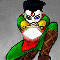

"He who flees and runs away, lives to fight another day!"
- "Kodan", Master of the Paladin's Guild
Default combat takes place every 2 seconds. And to make things more interesting, It also takes place in real time - whether you're ready or not. Every round, you have the option of selecting what you wish to do. You can fight, cast a spell, open a treasure container (if any), or just run. The symbol in front of the monster group tells you which group you are currently fighting and what your selection was for that round. To change the current monster group, hit either a number key for the new group (I.E. 1-4) or click on the monster. You can only fight one monster group at a time.
Listed below are the cursors and their description:
Symbol Selection Associated Key
+ Fight Chosen f
[ Defend Chosen d
> Cast Spell Chosen c
• Nothing Chosen (or Open Chest) Nothing, <space>, or 'o'
If auto-fight isn't turned on (default) in the Party Setup (i.e. begin fighting as soon as non-peaced monsters are encountered), the player can 'turn on' fighting by pressing 'f'. Keep in mind that if the monsters are at war with you, they don't care what you do - they'll attack you every round. Sometimes a party of characters may want to stop fighting to allow other party members to kill the monsters and gain experience - one can turn off fighting (or defending) by pressing the space bar.
Defend is an option usually only used when in a Party, however, if a player is experienced enough, they can use Defend when running through a room right before a monster strikes. Defend will increase a characters Defense (while selected) by 50% during combat. For more information on commands during combat, see the Commands section of this Helplesson.
It is in combat that your character gains the most experience. The tougher the monster, the more experience your character will gain.
Sometimes, your character may become "pinned". This means that your character cannot learn any more (gain experience) until they reach the next level in their current guild. It also means that your character has enough experience to make level and is 1 experience point away from making the next level. This quite often happens when a character is looking for a quested monster. The only way to become "un-pinned" is to make a level.
Move to the next section to read about Encounters and Treasure.
Move to the previous section to read about Encounters and Monster Attacks.
M1: "The Depths of Dejenol" is a Trademark of Decklin's Domain Ltd and is © Copyright 1994-2026 All Rights Reserved